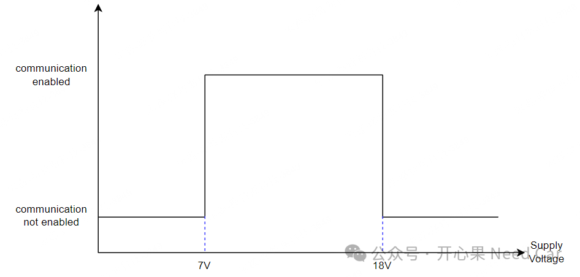
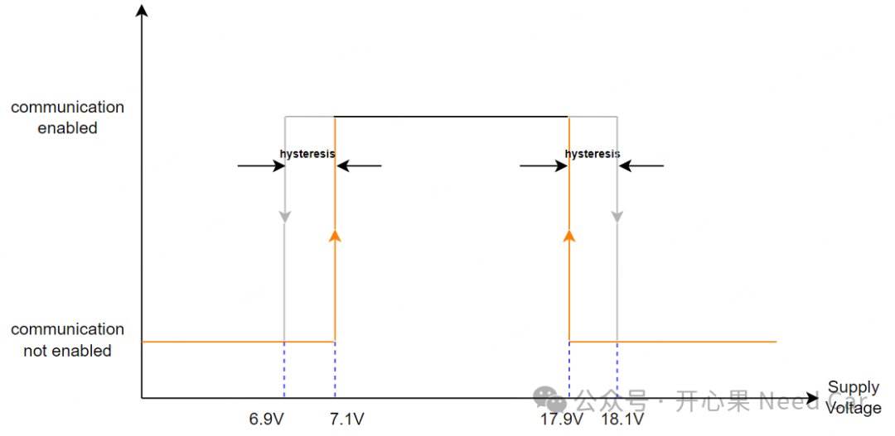
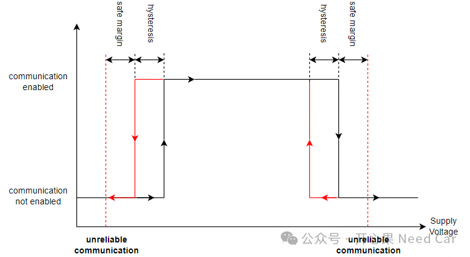

开心果 Need Car · 2024-12-02T06:38:00+08:00 · 微信原文
搞通信的小伙伴对于通信的使能和关断应该有所了解，简单说：当供电电压（Supply Voltage）超过某个阈值时，通信使能；当供电电压低于某个阈值时，通信关闭。所以，通信使能和关闭就像一个开关，取决于阈值电压。
1、迟滞电压的作用
在理解迟滞电压作用之前，我们先思考这样一个问题。
假设：通信的阈值电压#1为7V，高于7V，通信使能，低于7V时，通信关闭；通信的阈值电压#2为18V，高于18V，通信关闭，低于18V时，通信使能。示意如下：

如上图可以看出，7V和18V就像一个开关点，决定着通信的使能与否。但是，这可能会面临这样一个问题，受到外部环境干扰，电压小幅度的在7V或者18V之间横跳，这样就会导致通信被反复的使能和关闭。所以，为了解决这个问题，在工程上设计了迟滞电压值（hysteresis），以此确保在低电压和高电压供电条件下的通信稳定性。
2、迟滞余量与通信关系的具体理解
提到hysteresis，就会牵扯到迟滞余量（eg：200mV）的问题。迟滞余量通常指：在电路中，输入电压在切换输出状态时，需要跨越的电压差。假设迟滞余量设计为200mV，当电压高于7.1V使能通信，低于6.9V时关闭通信；当电压高于18.1V关闭通信，低于17.9V时使能通信。示意如下：

除了hysteresis，有些项目中还会设计安全余量（safe margin），以此确保通信系统的稳定性，示意如下：

如果直接理解hysteresis、safe margin还是觉得困难，那么，直接说"偏差"。eg：通信阈值7V，偏差0.1V，即：低于6.9V时关闭通信，高于7.1V时使能通信。
往期精彩回顾